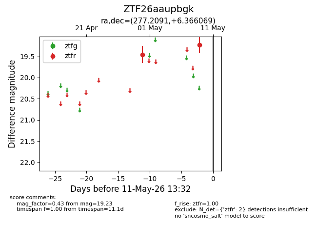
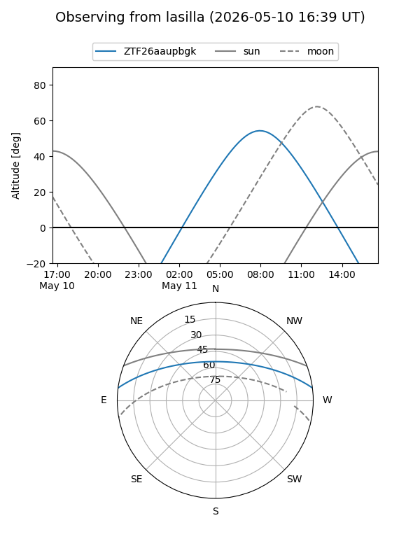
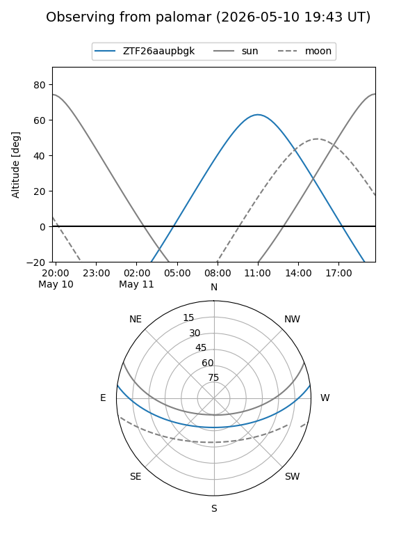

ZTF26aaupbgk
Target ZTF26aaupbgk at 2026-05-11 13:33
Aliases and brokers:
FINK: link
Lasair: link
ALeRCE: link
alt names
ZTF26aaupbgk (ztf,fink_ztf)
Coordinates:
equatorial (ra, dec) = 277.2091,+6.36607
equatorial (HMS+DMS) = 18:28:50.19,+06:21:57.85
galactic (l, b) = (36.0609,+7.91162)
Flags:
Photometry:
last ztfr=19.23
2 ztfr detections
Lightcurve

Visibility


Additional plots